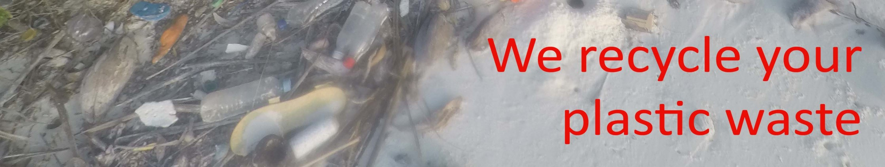
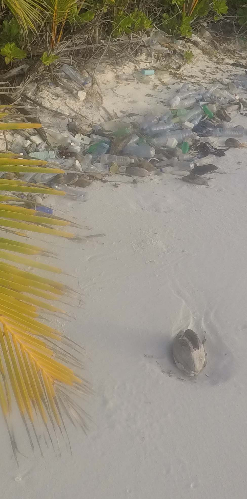
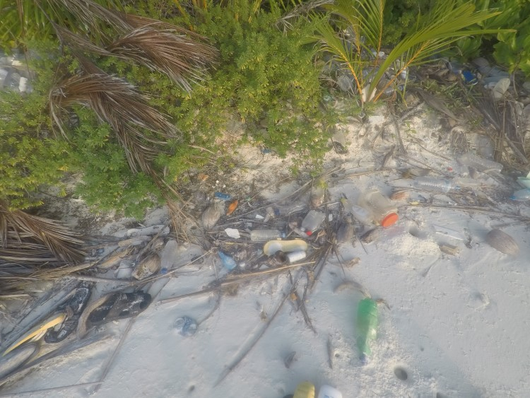
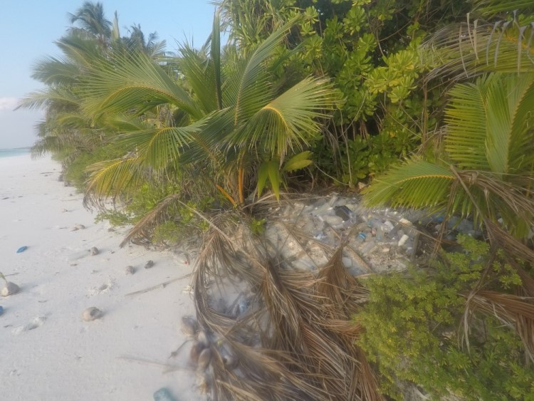

|  | ||
|  | ||
Above: A beautiful uninhabited island in Huvadhoo Atoll in the Maldives, with miles of pristine beaches.Right: Until you look closely at the high-water mark on the same beach.Below: Two more images taken from the shoreline of the same beach, this waste plastic is found all around this and many other islands.Web page last updated by:Juan Martin Hughes UY02710 |
||
|  |  | |